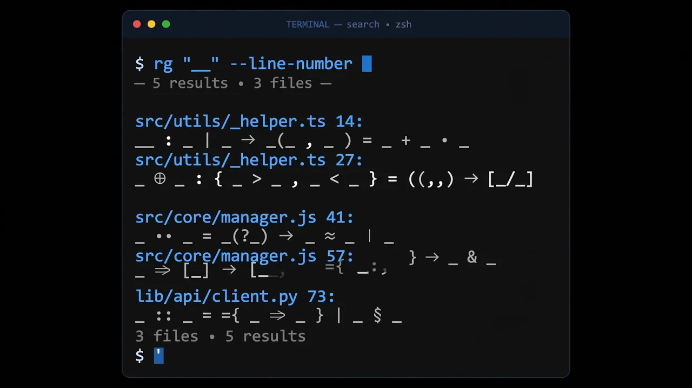

Give your coding agent a map of your codebase: a hands-on guide to Graphicle
Your coding agent does not know your codebase — it searches it, one grep at a time, and guesses at the callers it missed. Graphicle gives it a map instead: a code graph plus the project's memory, served over one MCP server, on your own machine. Here is how to set it up and ask it the first cited questions.
graphicle setup in a repo, then ask graphicle ask questions that come back with the exact files and lines behind each answer.- What: Graphicle — one Rust program combining a code graph (files, functions, classes, calls, imports) with project memory (docs, decisions, past agent sessions), served to coding agents over a single MCP server.
- Project: Graphicle-AI/graphicle, Apache-2.0 license, built by KarLex AI, created 2026-10-14 — 354 stars and 27 forks (verified 2026-10-24).
- Install and run:
brew install graphicle-ai/tap/graphicle, thengraphicle setupin a repository; ask questions withgraphicle ask "where is tax added to prices?". - Speed (the project's own benchmark, pre-release 0.1.1 engine vs Graphify 0.9.91): 3.0 to 22.7 times less time across 13 codebases and 39 measurements; the Kubernetes code-only extract took 1 minute 8 seconds against 25 minutes 47 seconds.
- Limits: by default a project holds up to 100,000 text files and 1 GiB of text; Windows is a preview build, and release builds are not yet signed with a trusted certificate.
- No key needed: the graph, sync, context, MCP server and app work with no API key and no account; a model is only needed for written answers, proposed memories and full extracts.
Ask a coding agent where a price gets its tax, or what breaks if you rename a retry helper, and the usual answer starts with a search. It greps, reads a few files, guesses at the callers it missed, and answers with confidence it has not earned. The problem is not the model. It is that the model has no map: no list of what calls what, no memory of the decision that chose this retry policy, no record of the last session that touched the same code.
Graphicle gives it that map, on your own machine. It is one Rust program that parses a repository into a code graph — files, functions, classes, calls and imports — and pairs it with project memory: docs, reviewed decisions and procedures, and past Claude Code and Codex sessions. Your agent queries both through a single MCP server and gets excerpts back with their sources, file and lines included, inside a token budget, without Graphicle itself calling a model.
It is Graphicle-AI/graphicle, Apache-2.0 licensed, built by KarLex AI, created on 2026-10-14, and it reached 354 GitHub stars in its first ten days. The code-graph engine is a Rust port of Graphify, credited in the project, while the memory, the app and session capture are Graphicle's own. Here is how to set it up in a repository and get the first cited answers out of it.
What you'll need
- macOS or Linux (Windows is a preview build)
- Homebrew, or a shell for the project's install script
- A code repository to index — start with a small one you know well
- Optional: Claude Code, Codex, Cursor, VS Code or Claude Desktop, to use it from your agent
- Optional: a model (Anthropic, OpenAI or Ollama) if you want written answers instead of evidence alone
Set up Graphicle in a repository
1. Install Graphicle
With Homebrew:
brew install graphicle-ai/tap/graphicle
Without Homebrew, the project documents an install script from its releases page:
curl -fsSL https://github.com/Graphicle-AI/graphicle/releases/latest/download/install.sh | sh
Check the install before you trust it with a repo:
graphicle doctor
Doctor runs through the installation, models, data files and CPU settings, and reports what is missing — including the warning that no answer model is set, which matters for step 3.
2. Set up a repository
Move into the repository and run setup:
cd your-repo
graphicle setup
Setup indexes the repository, builds its code graph and connects the coding agents it finds. It also turns on session capture, adds a short section to AGENTS.md (unless Claude Code is the only agent), and installs Git hooks that keep the project current. It lists every file it changes and backs each one up once as <file>.graphicle-bak — and graphicle disconnect undoes it all, which is the safety net for trying it on a real repo.
Sync respects .gitignore and skips .env files, keys and credentials, and session capture drops spans marked private and redacts credentials. Your sources, memories and graph live in one SQLite store in one data folder, the app and its endpoints listen on loopback by default, and the project states there is no telemetry and no account.

3. Ask a question from the terminal
Ask about your own code the way you would ask a colleague who knows the repo:
graphicle ask "where is tax added to prices?"
With no model configured, ask shows the evidence rather than a written answer. The project's own example returns four excerpts in 598 of 3,000 tokens, the first being shop/pricing.py:1-7, the function price_with_tax(), with TAX_RATE = 0.2 and the return line round(price * (1 + TAX_RATE), 2). That citation — file, lines, function — is the whole point: you can open the exact place and check the answer instead of taking the agent's word for it.
To get written answers, configure a model:
graphicle config set model anthropic
OpenAI and Ollama are the other documented options, and a local model through Ollama or any OpenAI-compatible server works too.
4. Trace what a change touches
Before you rename or change a symbol, ask the graph what depends on it:
graphicle graph extract . --code-only
graphicle graph affected "retry()"
The first command builds the code-only graph for the current directory; the second lists what depends on retry(). The same graphicle graph command searches the graph, explains a symbol, traces a path between symbols and exports an interactive HTML graph. Before each answer Graphicle also syncs the few files you changed, and the Git hooks sync after each commit, merge and checkout — so the answer reflects the code as it is now, not as it was at setup.
Recall can span the repositories of a workspace with graphicle context --workspace, and graphicle context plus the MCP tools return excerpts with their sources within a token budget, without calling a model — your agent's own model reads them.
5. Put it in front of your coding agent
Setup already connected the clients it found: Claude Code through .mcp.json in the repository, Codex through its config, Cursor and VS Code through their MCP files, and Claude Desktop through its settings file. Any other MCP client takes a short JSON entry from the project's MCP docs. Then ask your agent to use Graphicle, for example: use graphicle to find where failed requests are retried.
The MCP server serves the code-graph tools under Graphify's tool names, such as query_graph, get_neighbors and shortest_path, next to the memory tools. With --pull-requests it also serves pull-request tools that use the GitHub CLI. Memories that agents propose wait for your approval in the app, and reviewed memories are tied to the functions they are about: a memory goes stale when that code changes, and edits elsewhere in the file usually leave it current.
To see the graph, sources and memory yourself, and approve memories:
graphicle open
6. Check health, and undo if you want
graphicle doctor
graphicle disconnect
Doctor is the first thing to run when answers look wrong — it reports the checks that pass and the warnings, like a missing answer model. Disconnect removes what setup added; the .graphicle-bak backups let you restore a changed file if you need to.
What you built
One install that maps a repository and remembers the project around it, served to every coding agent you use through one MCP server. Your agent stops re-deriving the call graph from grep on every question, and every excerpt it uses carries its file and lines, so you can verify it. Changed files sync before each answer, sessions carry over into the next one once you have reviewed memories, and the whole store sits in one local SQLite file — not in a hosted service.
Honest limitations
- The speed numbers are the project's own, and the engine is pre-release. The 3.0 to 22.7 times figures compare a pre-release build of Graphicle's 0.1.1 memory engine against Graphify 0.9.91 on 13 codebases, 39 measurements, on the same machine; the graphs differ slightly (node counts within 4.7%, edge counts within 2.0%). The Kubernetes code-only extract — 1 minute 8 seconds against 25 minutes 47 seconds — is one run each, not a median.
- A graph does not automatically make the agent better. In the project's own agent tests, on 100 SWE-bench Verified tasks, plain Claude Code, Graphicle and Graphify found every file the fix changed in 95, 95 and 94 tasks — and the agent never called Graphicle's tools. On Graphify's 30-question showcase corpus, Graphicle found 99.2% of the facts against 94.7% for Claude Code alone, which the project itself calls a tie. Expect better citations, not a guaranteed better fix rate.
- No model means evidence, not answers. Without a configured model,
graphicle askshows excerpts only. And a fullgraphicle graph extract— as opposed to the code-only form used above — sends documents and images to the LLM whose API key it finds, so read that step before running it on a private repo. - Windows is a preview, and signing is pending. The Windows build is a preview for x86-64, and release builds are not yet signed with a trusted certificate — the Windows programs are signed through SignPath with a test certificate Windows does not trust, or left unsigned.
- It phones home once a day, by default. A daily check for a new release asks GitHub for the latest release, with no code or data; set
GRAPHICLE_NO_UPDATE_NOTIFIER=1to turn it off. A project can hold up to 100,000 text files and 1 GiB of text by default, and a very large file is analysed in part or kept as searchable text instead of stopping a sync. - Ten days old. Created 2026-10-14 with 354 stars at writing time; expect fast-moving docs and a commercial team edition in private preview alongside the free Apache-2.0 program.
Frequently asked questions
Do I need an API key or a model to use Graphicle?
No, for most of it. The code graph, sync, context, the MCP server, session capture and the app work without one. A model writes the answers of graphicle ask, proposes memories from sources, and reads documents and images in a full graph extract; local models through Ollama or any OpenAI-compatible server work.
Which coding agents does it connect to?
Claude Code, Codex, Cursor, VS Code and Claude Desktop, plus any other MCP client with a short JSON entry. Setup connects every client it finds, backs each changed file up once as a .graphicle-bak file, and graphicle disconnect removes what it added.
How do I undo everything setup changed?
Run graphicle disconnect. It removes what setup added, and every file setup changed was backed up once as <file>.graphicle-bak, so you can restore a file from its backup if you need to.